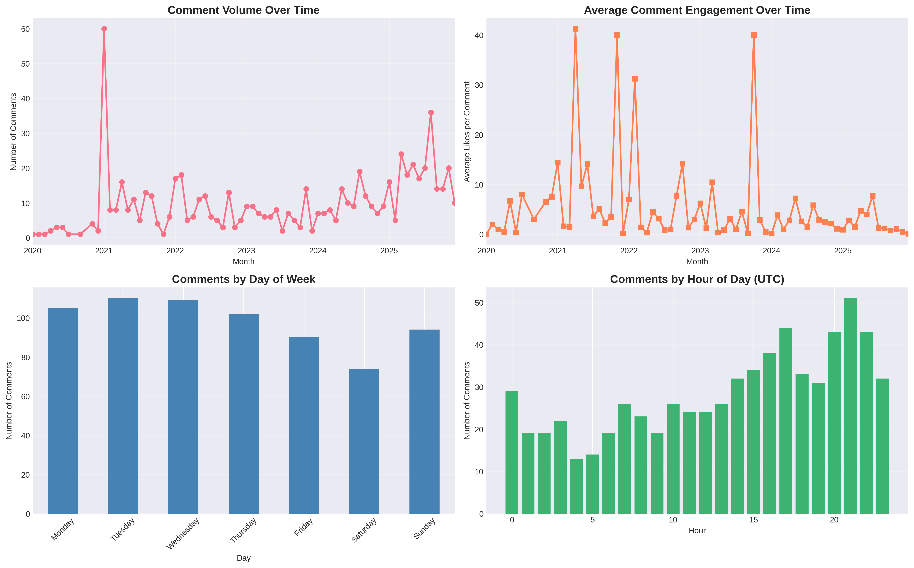
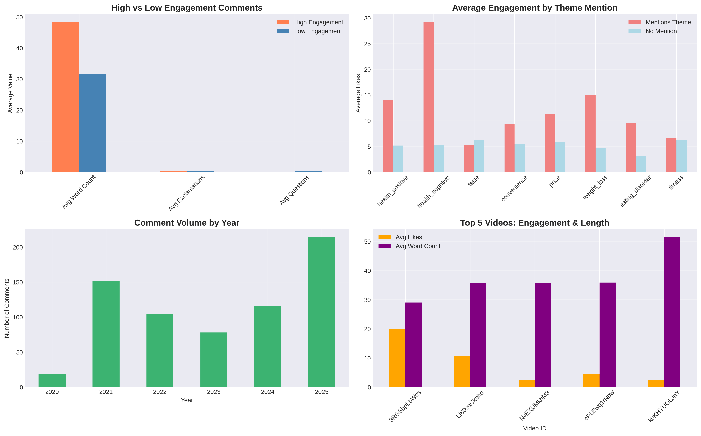
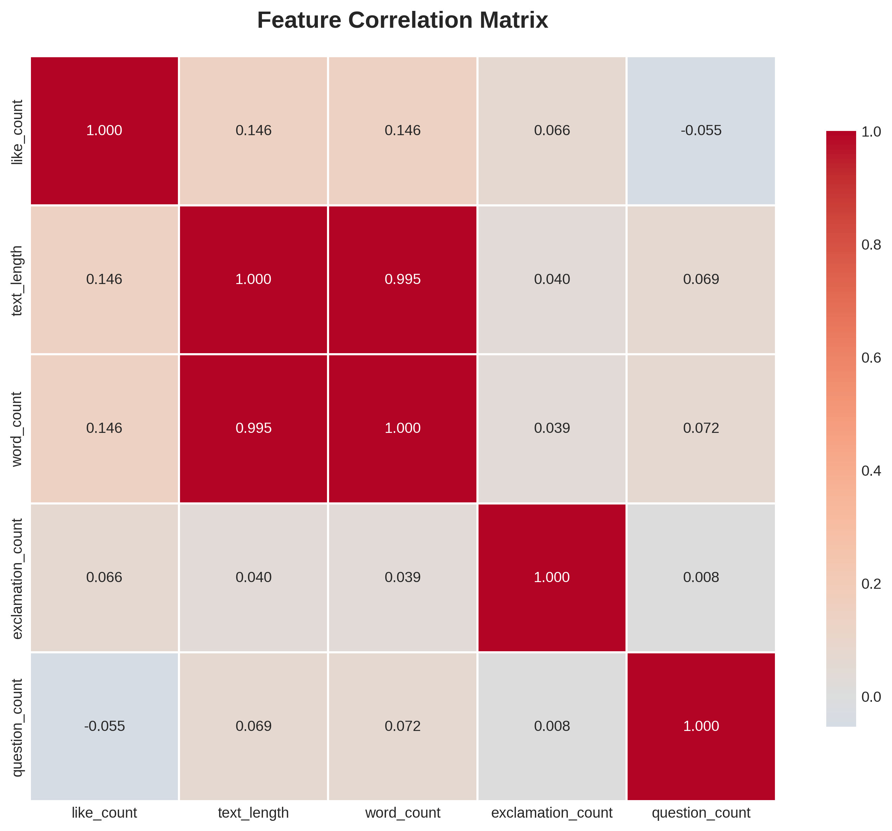

YouTube Comment Analysis
Python • API Data • NLP
Overview
Collected public YouTube comments from meal replacement review videos using YouTube API.
Cleaned comment data and analyzed sentiment, recurring complaints, trust signals, and engagement patterns.
Results
Source
21 videos
Dataset
684 comments
Insight
Negative experiences created stronger engagement
Use Case
Voice-of-customer analytics
Charts


